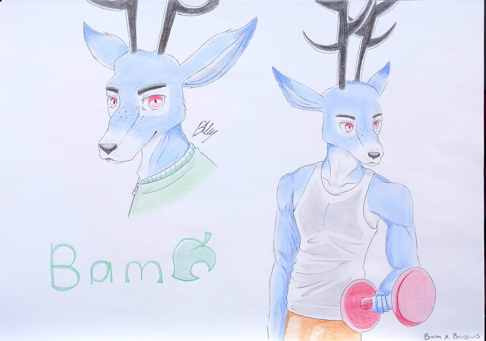

Pen illustrated and coloured pencil
08 June 2022, a fun personal drawing.
Bam is an energetic, jocky, male deer villager in the Animal Crossing game series. He is one of the first villagers that landed on the island that me and my sister created during our playthrough. He became a favorite villager to my sister, whom especially took a liking to his gym orientated personality. Coincidentally, she also takes a particular liking to a deer character from the Beastars anime known as Louis. And with that, I was inspired to draw Bam reimagined in the Beastars universe.
← Back to Gallery